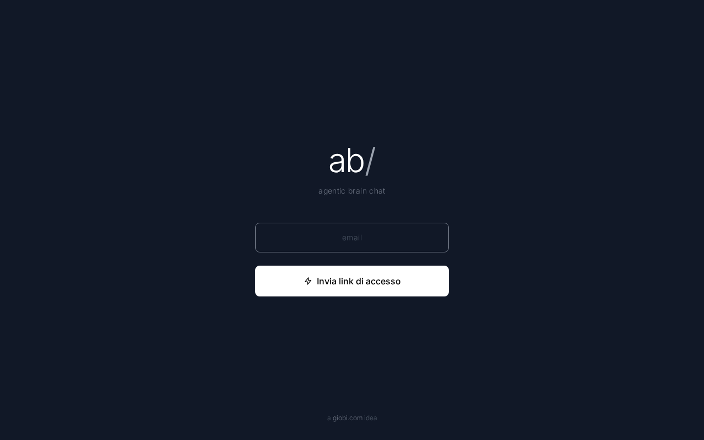

L'intera piattaforma ABChat su Generations (abchat.grworktech.com) era inaccessibile: ogni pagina restituiva un errore 500. La causa era un problema di permessi sui file interni del server, conseguenza di un aggiornamento di sicurezza effettuato il giorno precedente. Corretti i permessi, il sito funziona regolarmente: login, dashboard e tutte le funzioni sono operative.
Accedendo a abchat.grworktech.com (la piattaforma ABChat per Generations Recruitment) il sito mostrava un errore generico. Nessun utente poteva accedere: la pagina di login, la dashboard e qualsiasi altra sezione erano inutilizzabili.
Il giorno precedente era stato effettuato un aggiornamento per migliorare la sicurezza e l'isolamento dei dati tra gli utenti della piattaforma. Questo aggiornamento ha involontariamente modificato i permessi di alcune cartelle interne del server, impedendo alla piattaforma di scrivere i file temporanei necessari al funzionamento e di accedere al proprio database.
Abbiamo ripristinato i permessi corretti sulle cartelle interessate. La piattaforma ha ripreso a funzionare immediatamente: la pagina di login si carica, il modulo per richiedere il link di accesso funziona e il database risponde normalmente.

| Campo | Valore |
|---|---|
| Server | generations (135.181.144.5) — Hetzner CX23 |
| App path | /home/web/abchat.it/website |
| Target URL | abchat.grworktech.com / abchat.grworktech.com |
| Framework | Laravel 12.47.0 |
| PHP-FPM | 8.3 (user: www-data) |
| Database | SQLite |
| Scenario | Bug fix (post-deploy regression) |
| Iterazioni | 1 |
| Verdict | FIXED |
/var/abchat/workspaces/), ma la conseguenza indiretta ha rotto l'app Laravel principaleconfig:cache eseguito durante la diagnosi non ha cambiato la situazione — il problema era puramente di ownership filesystemgiobi (owner dei file), mascherando il problema di permessi di www-data